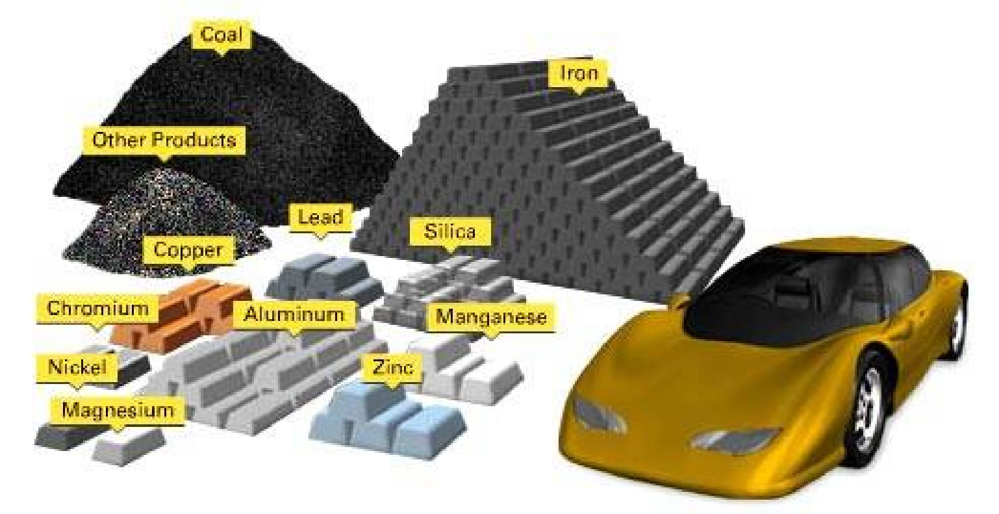
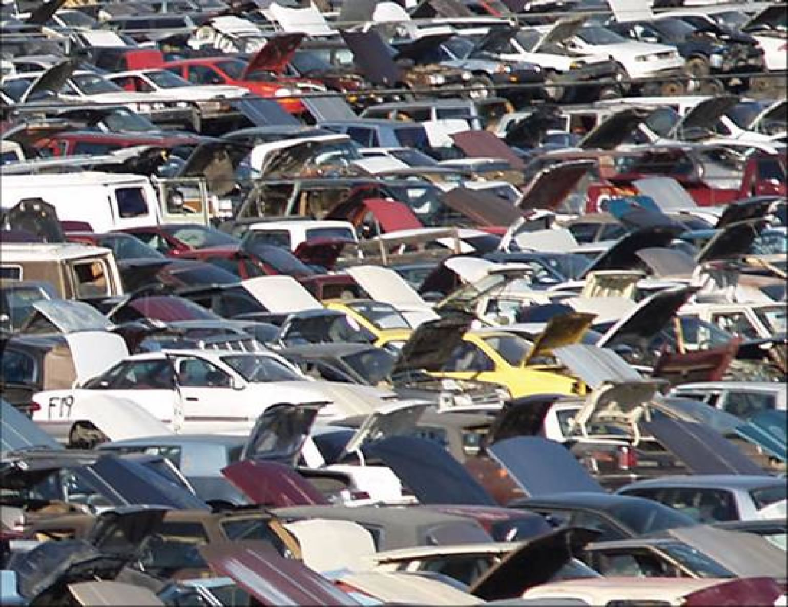
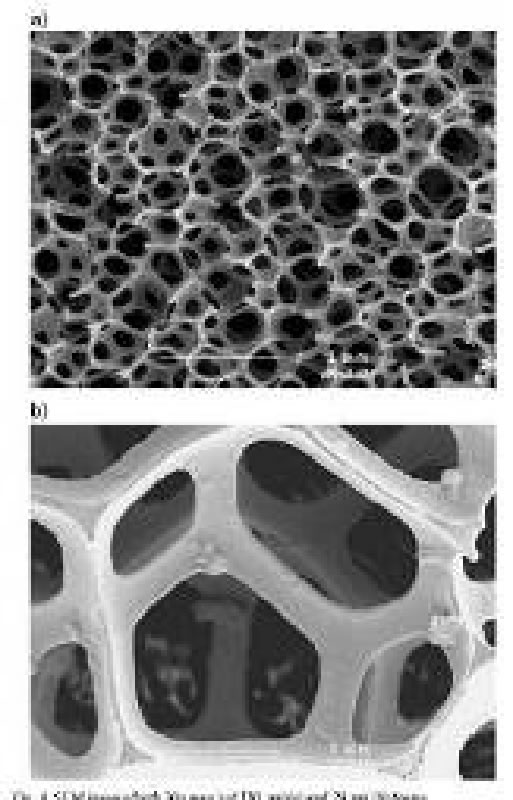

| METALS IN MEDICINE AND THE ENVIRONMENT | |||
| Metals | Hummer vs Prius: Beyond Gas Mileage | ||
|
In March of 2007 CNW Marketing Research, Inc published their independent research data in a paper titled, “Dust to Dust: The Energy Cost of New Vehicles from Concept to Disposal (8).” In the more than 450 page document, CNW argues that hybrid vehicles are not only not more energy efficient as conventional vehicles, but that they are actually less energy efficient and more environmentally detrimental than the largest of all commercial vehicles, the General Motor Hummer (8). Following a frenzy of media attention, CNW’s report was quickly met with opposition from the scientific community for its complete lack of references cited (not a single reference for the entire document), peer review, and transparency of methods (1). Not only did CNW’s report lack visible scientific proof to support their claims, the report went against all published peer review data known on the efficiency of hybrid vehicles (1). Ninety percent of energy required for automobile production and operation is consumed during the vehicle operation (1). Only about 10% of the total energy goes towards manufacturing the vehicle and all of its parts. Thus, it follows that the best way to improve the energy efficiency of vehicles is to reduce the amount of energy consumed during operation and this is exactly what hybrid vehicles do. Using hybrid technology, vehicles, such as the Toyota Prius, employ rechargeable nickel metal hydride (NiMH) batteries to lower gasoline consumption thereby increasing energy efficiency. The vast majority of pollution which comes from vehicles occurs during vehicle operation (85%) and not during manufacturing (10%) or disposal (5%). Hybrid vehicles reduce the main sources of operational environmental pollutants by 1) reducing the amount of gasoline burned, thus reducing exhaust Carbon Monoxide (CO), Nitrogen Oxides (NO), and Sulphur Dioxide (SO2) and, 2) replacing toxic Lead-Acid batteries with long lasting, rechargeable, environmentally friendly NiMH batteries.  Mining matrials used in vehicle production: http://www.mnh.si.edu/earth/text/3_3_2_1.html Lead is a highly toxic metal, which can lead to brain and kidney damage, hearing impairment, and learning and behavioral problems in humans (7). The average 3000 lb car contains 27 lbs of lead and 95% of this lead is in the battery (4). Thus by replacing lead-acid based batteries with NiMH batteries the amount of toxic lead in a car is reduced by 95%. In 2000, Americans used >2 million tons of lead. Automobiles are responsible for 50% of the 2 million tons and more than 90% of auto lead usage was for batteries. If the American auto industry no longer used lead-acid batteries we could reduce the countries annual use of toxic lead by 900,000 million tons thereby reducing environmental pollution from the mining process and lead disposal. Although lead batteries are the most recycled product known, 42,000 tons of lead ends up in land fills and thousands of more tons fall to the sides of our roadways and into our water in year.  Car graveyard: http://www.cleancarcampaign.org/GettingLeadOut.pdf The pure nickel used in NiMH batteries is not considered toxic (9, 10) and there are recycling protocols in place to insure all NiMH battery components can be reused (2, 5). Recycled nickel is mostly used for stainless steel production. Like all metal mining and refining processes, nickel production is not a totally environmentally friendly process (3, 6, 13). Flash Smelting is the most common form of nickel processing used today and the negative byproducts include SO2 and toxic nickel carbonyl gas. However, since the 1970’s technologically advanced decomposer towers are used in smelting plants to break down toxic gases preventing their release into the environment (13). Currently the percentage of nickel used to produce vehicle battery packs accounts for only a small fraction of the total amount of nickel produced by nickel plants world wide. For example, Toyota purchases the nickel need for its hybrid battery packs from Canada’s INCO Mines located in Greater Sudbury, Ontario. In 2004, INCO refined 241 million lbs of nickel and less than 1000 tons was purchased by Toyota to produce NiMH batteries. Although the amount if Nickel used by the automobile industry would rise if all vehicles used NiMH batteries, NiMH batteries are designed (and protected under warranty) to last the life of a vehicle (11, 12), and because of their longevity fewer batteries are required per automobile when compared to traditional toxic lead-acid batteries.  Nickel foam image: Paserin V., Marcuson S., Shu J., and Wilkinson D. CDV Technique for Inco Nickel Foam Production. Advanced Engineering Materials. 6,454-459 (2004). Although pure nickel itself is not toxic, when bound to other elements nickel complexes can be highly toxic especially with long term contact expose in humans (14). Additionally, about 5% of people express a mild allergy to nickel which results in redness, mild swelling, and irritation with dermatological exposure to nickel, most often from nickel containing jewelry. Resources For more on nickel allergy: For more information on nickel:
References (1) Hummer versus Prius: "Dust to Dust" Report Misleads Public with Bad Science (2) http://www.buchmann.ca/Article16-Page1.asp (3) http://www.greencarcongress.com/2005/07/new_nickel_foam.html (4) http://www.mnh.si.edu/earth/text/3_3_2_1.html (5) http://www.toyota.co.jp/en/environment/recycle/battery/index.html (6) Acid Mine Drainage at the Nickel Rim Mine Tailings (7) http://www.cleancarcampaign.org/GettingLeadOut.pdf (8) CNW's 'Dust to Dust' Automotive Energy Report (See "Dust.PDF" link) (10) http://data.energizer.com/PDFs/nickelmetalhydride_appman.pdf (11) http://data.energizer.com/PDFs/NiMH_disp.pdf (12) http://www.toyota.com/html/hybridsynergyview/2006/fall/battery.html (13) http://www.hybridexperience.ca/Toyota_Prius.htm (14) Nickel Smelting and Refining (15) http://www.inchem.org/documents/ehc/ehc/ehc108.htm Author: Rebecca Reddaway |
|||
| Topics | |||
|
|||